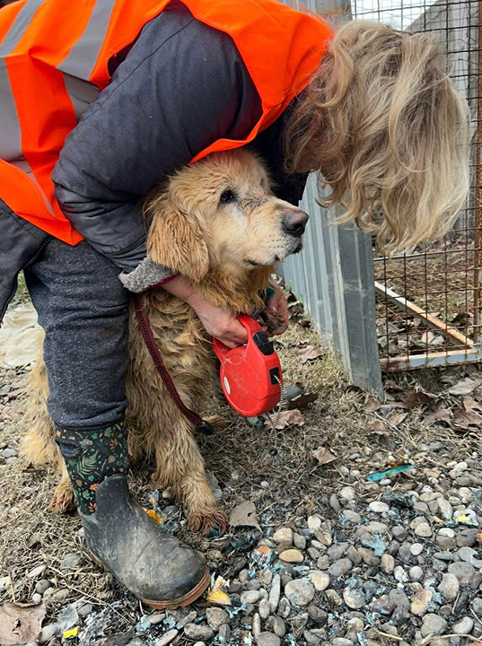
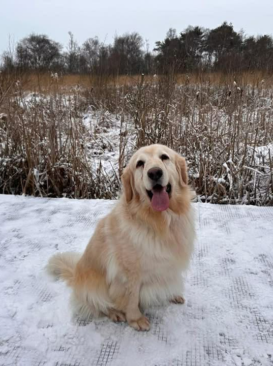

Waar hoop een thuis vindt
Hun start was niet eerlijk, maar hun toekomst kan dat wél zijn.



Wat kost een adoptie?
De adoptievergoeding dekt een deel van de medische kosten en het transport. Dit is wat inbegrepen is:
Adoptievergoeding
€230
Eenmalige bijdrage voor de medische verzorging van jouw hond in het asiel.
- Vaccinatie
- Ontworming
- Ontvlooiing
- Chip & Paspoort
Transport
€200
Deze betaling is voor een gecertificeerde dierentransporteur, een derde partij die het veilige vervoer van jouw hond verzorgt.
Hoe werkt het adoptieproces?
Van kennismaking tot thuis — stap voor stap begeleiden we je door het hele proces.
1
Kies een hond
Bekijk de beschikbare honden op onze website. Lees hun verhaal en kijk wie bij jouw situatie past. Twijfel je? Wij helpen je graag.
2
Kennismakingsgesprek
We plannen een gesprek (telefonisch of video) om jouw woon- en leefsituatie te bespreken. We kijken samen of de hond bij jou past.
3
Adoptieformulier
Je vult een adoptieformulier in met je gegevens en leefsituatie. Dit helpt ons om de juiste match te maken en de hond goed voor te bereiden.
4
Voorbereiden & transport
De hond wordt medisch gecontroleerd, gevaccineerd, gechipt en gesteriliseerd. We regelen het transport van het asiel naar Nederland.
5
Ophalen & wenperiode
Je haalt je hond op bij het afleverpunt. De eerste weken zijn spannend — wij blijven beschikbaar voor advies en begeleiding.
6
Thuiscontrole
Na enkele weken doen we een check-up om te zien hoe het gaat. We willen zeker weten dat zowel jij als de hond gelukkig zijn.
Wat gebeurt er voor aankomst?
Voordat een hond bij jou thuis komt, doorloopt elk dier een zorgvuldig traject in ons asiel.
Redding van straat of gemeente-asiel
De hond wordt opgehaald uit een onveilige situatie en naar ons asiel gebracht.
Vaccinatie & sterilisatie
Alle benodigde vaccinaties worden gegeven en de hond wordt gesteriliseerd of gecastreerd.
Socialisatie & herstel
De hond krijgt de tijd om te herstellen, te wennen aan mensen en andere honden.
EU-paspoort & chip
De hond krijgt een Europees dierenpaspoort, microchip en alle benodigde documenten voor transport.
Transport naar Nederland
Veilig transport via gecertificeerde dierentransporteur, rechtstreeks naar het afleverpunt.
Waar letten we op?
We willen dat elke adoptie slaagt. Daarom kijken we naar een aantal belangrijke punten voordat we een hond plaatsen.
-
Geschikte woning Voldoende ruimte en een veilige omgeving. Een tuin is een pre, maar geen vereiste.
-
Tijd en aandacht Een hond heeft dagelijkse zorg nodig: uitlaten, spelen, socialiseren. Reken op minstens 2-3 uur per dag.
-
Geduld & begrip Onze honden komen van de straat. Ze hebben soms tijd nodig om te wennen aan een huiselijke omgeving.
-
Financiële draagkracht Voer, dierenarts, verzekering — een hond brengt maandelijse kosten met zich mee. Wees hier realistisch over.
-
Akkoord huisgenoten Alle gezinsleden moeten achter de adoptie staan. We bespreken dit tijdens het kennismakingsgesprek.
Klaar om een leven te veranderen?
Bekijk onze beschikbare honden en vind jouw nieuwe gezinslid. Of neem contact met ons op — we helpen je graag.